|
 27/07/18
El Ministro de Asuntos
Exteriores, Unión Europea y Cooperación, D. José Borrell, clausuró el 30º
Programa Máster profesional en Unión Europea del Real Instituto de
Estudios Europeos en el Salón de Embajadores del Ministerio y procedió a
entregar a los integrantes de la promoción sus Certificados finales. 27/07/18
El Ministro de Asuntos
Exteriores, Unión Europea y Cooperación, D. José Borrell, clausuró el 30º
Programa Máster profesional en Unión Europea del Real Instituto de
Estudios Europeos en el Salón de Embajadores del Ministerio y procedió a
entregar a los integrantes de la promoción sus Certificados finales.
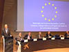 15/02/18
Acto de Homenaje a la Transición democrática española, bajo la presidencia de D. Javier Solana Madariaga, ex Ministro de Asuntos Exteriores, exSecretario general de la OTAN, primer Sr. PESC de la Unión Europea
El homenaje se centró en siete destacadas personalidades aragonesas de la Transición
 11/05/16
Audiencia de S. M. el Rey Felipe VI a una representación del Real Instituto de Estudios Europeos 11/05/16
Audiencia de S. M. el Rey Felipe VI a una representación del Real Instituto de Estudios Europeos
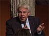 01/12/15
Lección inaugural de la 28ª. promoción del Programa Máster profesional en Unión Europea a cargo del expresidente del Gobierno D. Felipe González, impartida en Zaragoza
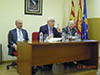 13/05/15
El Presidente de las Cortes de Aragón, Excmo. Sr. D. José Ángel
Biel, se dirige a los integrantes de la 27ª. promoción del Programa Máster
Previamente firmó en el Libro de Honor. Asistió al acto e intervino el Director
General de Políticas comunes y Asuntos generales de la Unión Europa, Excmo.
Sr. D. Alejandro Abellán.
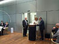 27/04/15
La
Excma. Sra. Dª. Margarita Delgado, Directora General Adjunta de Supervisión,
hace entrega de la
Insignia de Oro del Real Instituto de Estudios Europeos al Excmo. Sr. D. Antonio Sáinz de Vicuña
El acto tuvo lugar en la nueva sede del Banco Central Europeo, en Fráncfort. Antonio Sáinz de Vicuña ha sido durante muchos años el Director General del
Servicio jurídico del BCE
23/01/15
El diplomático Excmo. Sr. D. Enrique Mora firma en el Libro de
Honor del Real Instituto de Estudios Europeos, tras una de sus
intervenciones en el 27º. Programa Máster en Unión Europea
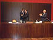 16/01/15
El eurodiputado y exMinistro de
Justicia, Excmo. Sr. Dr. Juan Fernando López Aguilar recibe la Medalla del Real
Instituto de Estudios Europeos
Se la entregó el Excmo. y
Magfco. Sr. D. Manuel López en un acto celebrado en la sala de conferencias del Paraninfo de la Universidad de Zaragoza
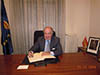 15/12/14
El prestigioso Abogado del Estado, actualmente en KPMG, el Excmo. Sr. D. Antonio Sáinz de Vicuña, firma en el libro de honor del Real Instituto de Estudios Europeos.
Durante muchos años ha sido el Director General del Servicio jurídico del Banco Central Europeo
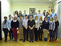 02/12/14
El Excmo. Sr. D. Alejandro Abellán, con integrantes de la Promoción Ricardo Díez-Hochleitner (27º. Programa Máster en Unión Europea), en un descanso de una de sus intervenciones
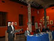 24/06/14
El Excmo. Sr. D. Jesús Gracia, Secretario de Estado de Cooperación
internacional y para Iberoamérica, imparte la Lección de clausura del 26º.
Programa Máster profesional en Unión Europea.
El Real El acto estuvo presidido por el Presidente de Ibercaja, Excmo. Sr. D. Amado Franco, y contó con la asistencia del Excmo. Sr. D. Gustavo Alcalde, Delegado del Gobierno en Aragón
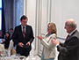 11/05/14
La diputada y ex Ministra de Asuntos Exteriores y de Cooperación,
Miembro del Comité de Honor del Real Instituto, hace
entrega de la Medalla del Instituto al Embajador Excmo. Sr. D.
Fernando Alvargonzález
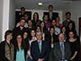 24/04/14
El Embajador Representante Permanente de España ante la Unión
Europea, tras una de sus intervenciones en el Máster, con
integrantes de la Promoción Mario Draghi
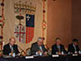 03/04/14
El Presidente de las Cortes de Aragón, Excmo. Sr. D. José Ángel Biel, preside el acto en el que el Sr. D. Antonio Tajani, recibirá la Insignia de Oro del Instituto
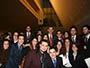 02/04/14
Integrantes de 27º. Promoción del Programa Máster con S. A. R. el Príncipe de Asturias, al término del I Foro
Europeo de la Industria y el Emprendimiento
02/04/14
Integrantes de la Promoción Mario Draghi posan con el Vicepresidente de la Comisión Europea, Excmo. Sr. D. Antonio Tajani
El Real Instituto de Estudios Europeos colaboró en la preparación y organización de este Foro Europeo
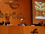 29/11/13
El Embajador de España ante la OCDE, Ricardo Díez-Hochleitner, impartió la Lección inaugural del 26º. Programa Máster en Unión Europea
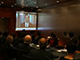 04/11/13
Mensaje del Presidente del Banco Central Europeo, Mario Draghi, al Real Instituto de Estudios Europeos
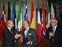 03/11/13
El Director General del BCE, Antonio Sáinz de Vicuña, recibe la Medalla del Real Instituto de Estudios Europeos
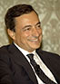 17/10/13
El Presidente del Banco Central Europeo, Mario Draghi, apadrinará a la 26ª. promoción del Programa Máster en Unión Europea del Real Instituto de Estudios Europeos
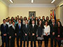 05/04/13
Alfonso Dastis, Embajador del Reino de España ante la Unión Europea, en el 25º. Programa Máster del Real Instituto de Estudios Europeos
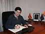 25/01/13
Jorge Gómez saludó a la Promoción Manuel Pizarro días antes de incorporarse a su puesto en la Comisión Europea en Bruselas
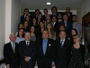 18/12/12
El Embajador Javier Elorza clausura en una sesión especial los estudios de 2012 en el marco del 25º. Máster en Unión Europea del RIEE
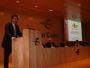 30/11/12
El Presidente del ICO impartió en Ibercaja la Lección inaugural del 25º. Programa Máster en Unión Europea (Promoción Manuel Pizarro) ante cerca de 200 personas
Con una brillante conferencia sobre "La Unión bancaria y la crisis de la eurozona".
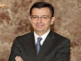 23/11/12
El Presidente del ICO, D. Román Escolano, impartirá el día 30 de noviembre la Lección inaugural del 25º. Programa Máster profesional en Unión Europea del RIEE
Tendrá lugar en la sede central de Ibercaja.
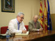 17/11/12
Esteban Peralta, funcionario de la Corte Penal Internacional, intervino en el Real Instituto de Estudios Europeos
15/11/12
El funcionario de la Corte Penal Internacional D. Esteban Peralta abrirá la sesión del sábado 17 en el 25º. Programa Máster en Unión Europea
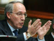 01/10/12
Manuel Pizarro apadrinará a la 25ª. Promoción del Programa Máster profesional en Unión Europea (26 de octubre de 2012-junio de 2013)
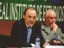 20/07/12
Se celebró la 28ª. Academia Europea de Jaca
Jesús Gracia Aldaz y Mario Garcés impartieron las conferencias de clausura y de apertura, respectivamente
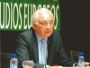 17/07/12
IV Curso sobre Función pública internacional y europea, y Diplomacia, en Jaca
Rafael Mendívil inauguró el Curso
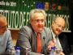 Homenaje a Esteban Peralta en la inauguración de la 28ª. Academia Europea de Jaca
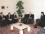 10/06/12
Nota del RIEE ante la detención ilegal del Prof. Esteban Peralta
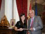 05/06/12
El Subsecretario de Asuntos Exteriores y de Cooperación, D. Rafael Mendívil, procedió a la entrega en el Salón de Embajadores del Palacio de Santa Cruz de Diplomas de Estudios Superiores Europeos en el curso de las sesiones en Madrid del 24º. Programa Máster en Unión Europea.
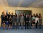 04/06/12
El Ministro de Defensa, D. Pedro Morenés Eulate, ha inaugurado las sesiones en Madrid del 24º. Programa Máster en Unión Europea
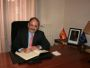 01/06/12
El Director General del Servicio jurídico de la Comisión Europea, y ex-Director General de Presupuestos, Luis Romero, visitó el Real Instituto de Estudios Europeos
Tras firmar en el Libro de Honor, impartió
una sesión en el 24º. Programa Máster profesional en Unión Europea
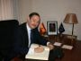 29/05/12
El Embajador de España ante la OCDE interviene en el Máster en Unión Europea del Real Instituto de Estudios Europeos
26/05/12
Ricardo Díez-Hochleitner, Luis Romero y Nuria Díaz intervendrán en Zaragoza en el Máster del Real Instituto de Estudios Europeos
El embajador Díez-Hochleitner hablará el día 29 sobre "La OCDE, como estímulo y referente de la integración europea".
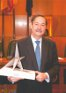 09/05/12
Ricardo Díez-Hochleitner, Embajador de España ante la OCDE, Miembro del Comité de Honor del RIEE, recibe el Premio "Estrella de Europa" 2012 del Ayuntamiento de Zaragoza.
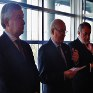 21/04/12
El Vicepresidente de la Comisión Europea y Comisario responsable de Industria y Espíritu emprendedor, D. Antonio Tajani, recibió la Medalla del Real Instituto de Estudios Europeos
El día 17 de abril, el eurodiputado y ex-Ministro D. Jaime Mayor Oreja ha entregado al Vicepresidente de la Comisión Europea, D. Antonio Tajani la Medalla del RIEE en el Parlamento Europeo, en Estrasburgo.
Nombramientos de los Miembros del Comité de Honor del RIEE Javier Elorza, José de Carvajal y Daniel Calleja
Javier Elorza y José de Carvajal han sido nombrados respectivamente Embajadores de España en Italia y ante la OTAN. Daniel Calleja ha sido nombrado Director General de Industria de la Comisión Europea.
Conferencia inaugural de Dª. Isabel Tocino, Miembro del Comité de Honor del RIEE y ex-Ministra de Medio Ambiente
En el XXX Curso sobre la Unión Europea de la Cátedra "Alonso V de Aragón" el 20 de marzo, en la Diputación de Zaragoza.
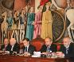 16/12/11
Concluyen las jornadas "25 años de España en la Unión Europea y la crisis"
La inauguración de las mismas estuvo presidida por el Presidente de la Diputación de Zaragoza Luis María Beamonte, el día 14 de diciembre. La clausura estuvo presidida por el Consejero de Hacienda y Administración pública del Gobierno de Aragón Mario Garcés.
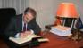 04/12/11
El Director de la Representación en España de la Comisión Europea, Francisco Fonseca, firma en el Libro de Honor del Real Instituto de Estudios Europeos
El 2 de diciembre, antes de su intervención en el XXIV Programa Máster en Unión Europea.
03/12/11
Jornadas "25 años de España en la Unión Europea y la crisis"
Organizadas por el Real Instituto de Estudios Europeos con la colaboración de la Cátedra "Alonso V de Aragón" contarán con la participación, entre otros, de Leopoldo Abadía y el Embajador Javier Elorza.
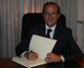 28/11/11
Daniel Calleja, enviado especial para las PYMES de la
Comisión Europea, impartió la lección inaugural de la promoción
2011-2012 del Programa Máster profesional en Unión Europea
Disertó sobre "La política industrial de la Unión Europea ante la crisis" en el Patio de la Infanta, en Ibercaja, en un acto presidido por el Consejero de Economía y Empleo del Gobierno de Aragón, Francisco Bono.
25/11/11
Jaime Caruana
apadrina a la promoción 2011-2012 del
Programa Máster Profesional en Unión Europea
El prestigioso Director General
del Banco de Pagos Internacionales y
ex-Gobernador del Banco de España apadrina a la XXIV promoción..
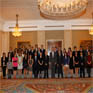 30/05/11
S.A.R. el Príncipe de
Asturias recibió a una representación del Real Instituto de Estudios
Europeos en su 25 aniversario
La delegación, encabezada por
buena parte de la Junta directiva del Instituto, estaba integrada
también por los integrantes de la Promoción Príncipe Felipe.
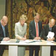 09/05/11
Celebración del Día
de Europa con la participación de la Secretaria General Adjunta del
Consejo de Europa
También participó en este acto
el Secretario de Estado de Asuntos Exteriores e Iberoamericanos, el
Excmo. Sr. D. Juan Antonio Yáñez-Barnuevo.
14/04/11
Próxima celebración
de las Jornadas Europeas y del Día de Europa con la participación de la
Secretaria General Adjunta del Consejo de Europa
La celebración del Día de
Europa tendrá lugar el 5 de mayo en la sede central de Ibercaja con
intervención de la Excma. Sra. Dª Maud de Boer-Buquicchio.
12/04/11
Sesiones
de trabajo del Máster del Real Instituto de Estudios Europeos con
González-Páramo, miembro del Comité Ejecutivo del Banco Central Europeo
En la sede del Banco Central
Europeo en Fráncfort.
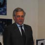 11/04/11
El Vicepresidente de
la Comisión Europea Antonio Tajani recibió al Máster del Real Instituto
de Estudios Europeos
Los integrantes del Máster
mantuvieron también sesiones de trabajo con la Secretaria General
Adjunta del Consejo de Europa, Jaime Mayor Oreja, Juan Fernando López
Aguilar, Carlos Iturgaiz y el Representante de España ante el Consejo
de Europa.
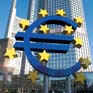 19/03/11
En el 25º
aniversario, el Real Instituto de Estudios Europeos incorpora sesiones
de trabajo en Fráncfort a su Máster en Unión Europea
La primera beneficiada de esta
visita al Banco Central Europeo será la Promoción Príncipe
Felipe (2010-2011).
18/03/11
Abierta
la inscripción para el XXIV Programa Máster Profesional en Unión
Europea (2011-12)
Información acerca de la
inscripción en www.riee.eu/master.html
25/10/10
El
26 de octubre se inicaiaron las sesiones de la 23ª promoción del
Programa Máster profesional en Unión Europea
Amado Franco, Presidente de
Ibercaja y Vicepresidente de la CECA, impartió el día 4 de noviembre la
lección inaugural.
15/07/10
Inauguración
de la 26ª. Academia Europea de Jaca
El Presidente de la Comunidad
Autónoma de Aragón, Marcelino Iglesias, hizo entrega al Embajador de
España ante la Unión Europea, Carlos Bastarreche, de la Medalla del
Real Instituto de Estudios Europeos.
14/07/10
Entrega
de diplomas del Máster del Real Instituto de Estudios Europeos
El máximo responsable del Banco
Internacional de Pagos de Basilea, D. Jaime Caruana, hizo entrega el 12
de julio de los Diplomas.
05/07/10
Presentación
en el Ayuntamiento de la 26ª. Academia Europea de Jaca y el 2º Curso
sobre Función pública internacional y europea, y Diplomacia
Ambos tendrán lugar del 19 al
23 de julio en Jaca, la Academia en horario de tarde y el Curso en
horario de mañana.
17/05/10
Se
abre el período de inscripción para la Academia Europea de Jaca y el
Curso de Función pública internacional y europea, y Diplomacia
Ambos tendrán lugar del 19 al
23 de julio en Jaca, la Academia en horario de tarde y el Curso en
horario de mañana.
05/05/10
Concluyeron
con éxito las Jornadas Europeas 2010
Los días 4 y 5 de mayo han
tenido lugar en la Diputación de Zaragoza las Jornadas Europeas 2010,
“La Unión Europea: pasado, presente y futuro”.
13/01/10
Javier
Solana apadrina la promoción del Máster del Real Instituto de Estudios
Europeos
El ex-Ministro de Asuntos
Exteriores y ex-Secretario General de la OTAN, que acaba de dejar sus
funciones como Secretario General del Consejo de la Unión Europea y
Alto Representante para la Política exterior y de seguridad común, ha
aceptado apadrinar la 22ª promoción del Programa Máster en Unión
Europea.
04/12/09
Juan
Fernando López Aguilar impartió la lección inaugural del 22º Programa
Máster en Unión Europea
El 4 de diciembre, Juan
Fernando López Aguilar, Presidente de la Comisión de Libertades
Civiles, Justicia y Asuntos de Interior del Parlamento Europeo y
ex-Ministro de Justicia, impartió la Lección inaugural del XXII
Programa Máster en Unión Europea del R.I.E.E.
27/10/09
Comienzo
de las sesiones de la 22º promoción del Programa Máster en Comunidades
Europeas y Unión Europea
La 22ª. edición se abre en
Zaragoza el 27 de octubre de 2009, con participantes procedentes de
nueve países y de diferentes carreras.
06/07/09
Presentación
en el Ayuntamiento de la 25ª. Academia Europea de Jaca
El acto tuvo lugar el día 7 de
julio, a las 9.45 horas, en el Salón de plenos del Ayuntamiento de Jaca.
09/06/09
Javier
Velasco clausuró el XXI Programa Máster del Real Instituto de Estudios
Europeos
Estuvo acompañado, además de
por altos cargos de su departamento, por Nuria Díaz, Jefe del equipo
que defiende los intereses de España ante el Tribunal de Justicia de
las Comunidades Europeas, y Maximiliano Bernad, Presidente del
Instituto.
 11/03/09
Jose
Manuel Durão Barroso, presidente de la Comisión de las Comunidades
Europeas, recibe la Medalla e Insignia de Oro del Real Instituto de
Estudios Europeos
11/03/09
Jose
Manuel Durão Barroso, presidente de la Comisión de las Comunidades
Europeas, recibe la Medalla e Insignia de Oro del Real Instituto de
Estudios Europeos
El acto de entrega tuvo lugar
en Bruselas el miércoles 11 de marzo, a las 19.00 horas, en la
Representación Permanente de España ante la Unión Europea.
|